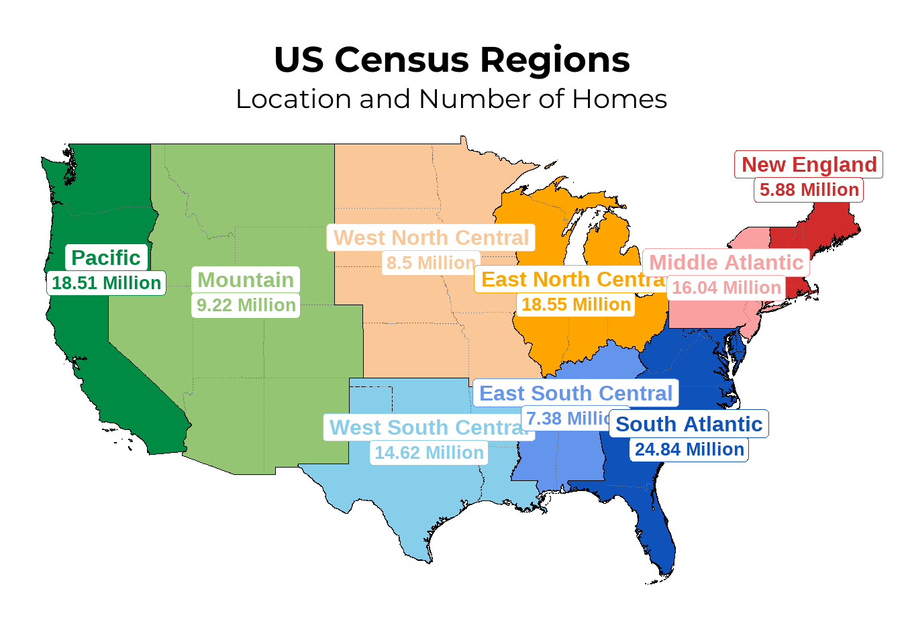
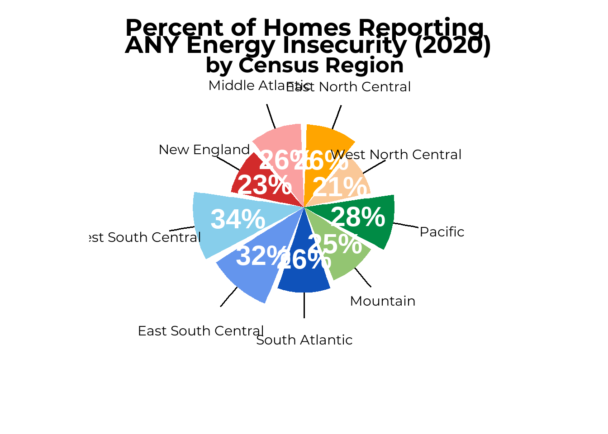
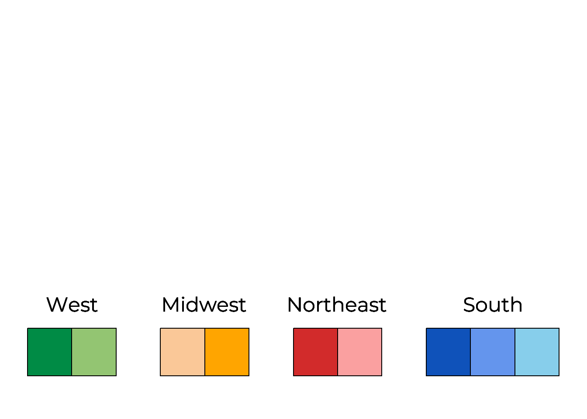
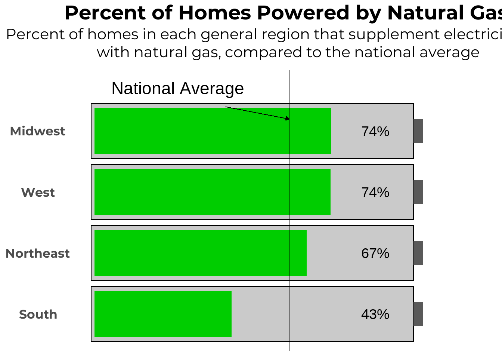
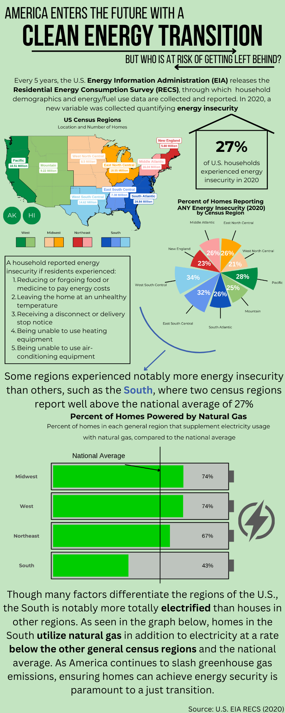

## Include necessary packages
library(showtext)
library(tidyverse)
library(sf)
library(ggrepel)
library(usmap)
##Add typeface "montserrat" from Google Fonts
font_add_google(name = "Montserrat", family = "mont")
##Add typeface "Barlow" from Google Fonts
font_add_google(name = "Barlow", family="barlow")
## enable use of Google Fonts
showtext_auto()HW 4 Final
Load packages and fonts
Read in Data, Make Color Palette, etc.
##read in census_data that was wrangled for HW2 and save it as dataframe "census_nrg"
census_nrg <- read_csv(here::here("data_intermediate/census_data.csv"))
##make new data frame that just has "any insecurity" aka the sum of all the specific indicators
census_any <- census_nrg %>%
filter(indicator == "any_insecurity")
##set order for the regions so I can keep the red and green ones apart later
specific_region_order <- c( "East North Central", "West North Central", "Pacific", "Mountain","South Atlantic" , "East South Central", "West South Central" , "New England", "Middle Atlantic")
##order the regions
census_any$specific_region <- factor(census_any$specific_region, levels = specific_region_order)
whole_us <- sum(census_any$n_homes)/sum(census_any$total_us)
##determine certain colors for each region so I only need to edit it here later
color_pacific = "springgreen4"
color_mountain = "#93C572"
color_wnc = "#FAC898"
color_enc = "#FFA500"
color_ne = '#D22B2B'
color_ma = "#FAA0A0"
color_sa = "#0F52BA"
color_esc = "#6495ED"
color_wsc ="#87CEEB"
##create a color palette for each of the specific census regions
region_palette <- c("Pacific" = color_pacific, "Mountain" = color_mountain, "West North Central" = color_wnc, "East North Central" = color_enc, "New England" = color_ne, "Middle Atlantic" = color_ma, "South Atlantic" = color_sa, "East South Central" = color_esc, "West South Central" = color_wsc)Wrangle data for map
##read in shapefile of the US states
states <- read_sf(here::here("data/states/US_State_Boundaries.shp")) %>%
##put variable names in lowercase_snake
janitor::clean_names() %>%
## select only the fid, state abbreviation, and the geometry
select(1,4, 17)
states <- st_transform(states, crs = 3857)
##make l ist of which abbreviations go with each census region
pac_list <- c("AK", "HI", "WA", "CA", "OR")
mountain_list <- c("MT", "ID", "WY", "NV", "UT", "CO", "AZ", "NM")
wnc_list <- c("ND", "SD", "NE", "KS", "MN", "IA", "MO")
enc_list <- c("WI", "IL", "IN", "MI", "OH")
new_england_list <- c("CT", "MA", "RI", "NH", "VT", "ME")
mid_atlantic_list <- c("PA", "NJ", "NY")
wsc_list <- c("TX", "OK", "AR", "LA")
esc_list <- c("KY", "TN", "MS", "AL")
s_atlantic_list <- c("DE", "DC", "MD", "NC", "VA", "WV", "GA", "FL", "SC")
##mutate so that the region goes with the appropriate states
states <- states %>%
mutate(specific_region = case_when(
state_abbr %in% pac_list ~ "Pacific",
state_abbr %in% mountain_list ~ "Mountain",
state_abbr %in% wnc_list ~ "West North Central",
state_abbr %in% enc_list ~ "East North Central",
state_abbr %in% new_england_list ~ "New England",
state_abbr %in% mid_atlantic_list ~ "Middle Atlantic",
state_abbr %in% wsc_list ~ "West South Central",
state_abbr %in% esc_list ~ "East South Central",
state_abbr %in% s_atlantic_list ~ "South Atlantic",
TRUE ~ "Other" # Default value if none of the conditions are met
)) %>%
filter(!state_abbr %in% c("HI","AK", "PR", "VI"))
##prepare data for map -- each region and their number of homes
n_homes_map <- census_nrg %>%
filter(indicator == "any_insecurity") %>%
select(specific_region, total_us)
##join the number of homes with the spatial data
states <- left_join(states, n_homes_map, by = "specific_region")
states <- states %>%
mutate(total_us = paste(total_us, "Million"))
##set how much I'm going to offset one of the labels
jitter_y <- 200000Prep labels for Pacific region
##PACIFIC
##filter the whole US by just the mountain region but exclude Alaska and Hawaii
pac_lab <- states %>%
filter(state_abbr %in% pac_list)
# create a new data frame for the merged geometry
merged_pac <- data.frame(specific_region = pac_lab$specific_region[1],
total_us = pac_lab$total_us[1])
## make a simple features object
merged_pac_sf <- st_as_sf(merged_pac, geometry = st_union(pac_lab), crs = 3857)
## Get the centroid for the # of homes
pac_centroid_n <- merged_pac_sf %>%
st_centroid(merged_pac_sf)
## get the coordinates to adjust the y one
pac_cord <- st_coordinates(pac_centroid_n)
## change the latitiude by the jitter amount
pac_cord[2] = pac_cord[2] + jitter_y
## make a new df with the appropriate lat and long
merged_pac <- merged_pac %>%
mutate("Lat" = pac_cord[1], "Long" = pac_cord[2])
## get new sf
pac_centroid_name <- st_as_sf(merged_pac, coords = c("Lat", "Long"),crs = 3857)Mountain region
##MOUNTAIN
##filter the whole US by just the mountain region but exclude Alaska and Hawaii
mount_lab <- states %>%
filter(state_abbr %in% mountain_list)
# create a new data frame for the merged geometry
merged_mount <- data.frame(specific_region = mount_lab$specific_region[1],
total_us = mount_lab$total_us[1])
## make a simple features object
merged_mount_sf <- st_as_sf(merged_mount, geometry = st_union(mount_lab), crs = 3857)
## Get the centroid for the # of homes
mount_centroid_n <- merged_mount_sf %>%
st_centroid(merged_mount_sf)
## get the coordinates to adjust the y one
mount_cord <- st_coordinates(mount_centroid_n)
## change the latitiude by the jitter amount
mount_cord[2] = mount_cord[2] + jitter_y
## make a new df with the appropriate lat and long
merged_mount <- merged_mount %>%
mutate("Lat" = mount_cord[1], "Long" = mount_cord[2])
## get new sf
mount_centroid_name <- st_as_sf(merged_mount, coords = c("Lat", "Long"),crs = 3857)West North Central
##WEST NORTH CENTRAL
##filter the whole US by just the wnc region
wnc_lab <- states %>%
filter(state_abbr %in% wnc_list)
# create a new data frame for the merged geometry
merged_wnc <- data.frame(specific_region = wnc_lab$specific_region[1],
total_us = wnc_lab$total_us[1])
## make a simple features object
merged_wnc_sf <- st_as_sf(merged_wnc, geometry = st_union(wnc_lab), crs = 3857)
## Get the centroid for the # of homes
wnc_centroid_n <- merged_wnc_sf %>%
st_centroid(merged_wnc_sf)
## get the coordinates to adjust the y one
wnc_cord <- st_coordinates(wnc_centroid_n)
## change the latitiude by the jitter amount
wnc_cord[2] = wnc_cord[2] + jitter_y
## make a new df with the appropriate lat and long
merged_wnc <- merged_wnc %>%
mutate("Lat" = wnc_cord[1], "Long" = wnc_cord[2])
## get new sf
wnc_centroid_name <- st_as_sf(merged_wnc, coords = c("Lat", "Long"),crs = 3857)East North Central
##EAST NORTH CENTRAL
##filter the whole US by just the wnc region
enc_lab <- states %>%
filter(state_abbr %in% enc_list)
# create a new data frame for the merged geometry
merged_enc <- data.frame(specific_region = enc_lab$specific_region[1],
total_us = enc_lab$total_us[1])
## make a simple features object
merged_enc_sf <- st_as_sf(merged_enc, geometry = st_union(enc_lab), crs = 3857)
## Get the centroid for the # of homes
enc_centroid_n <- merged_enc_sf %>%
st_centroid(merged_enc_sf)
## get the coordinates to adjust the y one
enc_cord <- st_coordinates(enc_centroid_n)
## change the latitiude by the jitter amount
enc_cord[2] = enc_cord[2] - jitter_y
## make a new df with the appropriate lat and long
merged_enc <- merged_enc %>%
mutate("Lat" = enc_cord[1], "Long" = enc_cord[2])
## get new sf
enc_centroid_name <- st_as_sf(merged_enc, coords = c("Lat", "Long"),crs = 3857)Middle Atlantic
##MID ATLANTIC
##filter the whole US by just the wnc region
ma_lab <- states %>%
filter(state_abbr %in% mid_atlantic_list)
# create a new data frame for the merged geometry
merged_ma <- data.frame(specific_region = ma_lab$specific_region[1],
total_us = ma_lab$total_us[1])
## make a simple features object
merged_ma_sf <- st_as_sf(merged_ma, geometry = st_union(ma_lab), crs = 3857)
## Get the centroid for the # of homes
ma_centroid_n <- merged_ma_sf %>%
st_centroid(merged_ma_sf)
## get the coordinates to adjust the y one
ma_cord <- st_coordinates(ma_centroid_n)
## change the latitiude by the jitter amount
ma_cord[2] = ma_cord[2] + jitter_y
## make a new df with the appropriate lat and long
merged_ma <- merged_ma %>%
mutate("Lat" = ma_cord[1], "Long" = ma_cord[2])
## get new sf
ma_centroid_name <- st_as_sf(merged_ma, coords = c("Lat", "Long"),crs = 3857)New England
##NEW ENGLAND
##filter the whole US by just the wnc region
ne_lab <- states %>%
filter(state_abbr %in% new_england_list)
# create a new data frame for the merged geometry
merged_ne <- data.frame(specific_region = ne_lab$specific_region[1],
total_us = ne_lab$total_us[1])
## make a simple features object
merged_ne_sf <- st_as_sf(merged_ne, geometry = st_union(ne_lab), crs = 3857)
## Get the centroid for the # of homes
ne_centroid_n <- merged_ne_sf %>%
st_centroid(merged_ne_sf)
## get the coordinates to adjust the y one
ne_cord <- st_coordinates(ne_centroid_n)
ne_cord[2] = ne_cord[2] + 2*jitter_y
merged_ne_homes <- merged_ne %>%
mutate("Lat" = ne_cord[1], "Long" = ne_cord[2])
ne_centroid_n <- st_as_sf(merged_ne_homes, coords = c("Lat", "Long"),crs = 3857)
## change the latitiude by the jitter amount
ne_cord[2] = ne_cord[2] + jitter_y
## make a new df with the appropriate lat and long
merged_ne <- merged_ne %>%
mutate("Lat" = ne_cord[1], "Long" = ne_cord[2])
## get new sf
ne_centroid_name <- st_as_sf(merged_ne, coords = c("Lat", "Long"),crs = 3857)West South Central
##WEST SOUTH CENTRAL
##filter the whole US by just the wsc region
wsc_lab <- states %>%
filter(state_abbr %in% wsc_list)
# create a new data frame for the merged geometry
merged_wsc <- data.frame(specific_region = wsc_lab$specific_region[1],
total_us = wsc_lab$total_us[1])
## make a simple features object
merged_wsc_sf <- st_as_sf(merged_wsc, geometry = st_union(wsc_lab), crs = 3857)
## Get the centroid for the # of homes
wsc_centroid_n <- merged_wsc_sf %>%
st_centroid(merged_wsc_sf)
## get the coordinates to adjust the y one
wsc_cord <- st_coordinates(wsc_centroid_n)
## change the latitiude by the jitter amount
wsc_cord[2] = wsc_cord[2] + jitter_y
## make a new df with the appropriate lat and long
merged_wsc <- merged_wsc %>%
mutate("Lat" = wsc_cord[1], "Long" = wsc_cord[2])
## get new sf
wsc_centroid_name <- st_as_sf(merged_wsc, coords = c("Lat", "Long"),crs = 3857)East South Central
##EAST SOUTH CENTRAL
##filter the whole US by just the wsc region
esc_lab <- states %>%
filter(state_abbr %in% esc_list)
# create a new data frame for the merged geometry
merged_esc <- data.frame(specific_region = esc_lab$specific_region[1],
total_us = esc_lab$total_us[1])
## make a simple features object
merged_esc_sf <- st_as_sf(merged_esc, geometry = st_union(esc_lab), crs = 3857)
## Get the centroid for the # of homes
esc_centroid_n <- merged_esc_sf %>%
st_centroid(merged_esc_sf)
## get the coordinates to adjust the y one
esc_cord <- st_coordinates(esc_centroid_n)
## change the latitiude by the jitter amount
esc_cord[2] = esc_cord[2] + jitter_y
## make a new df with the appropriate lat and long
merged_esc <- merged_esc %>%
mutate("Lat" = esc_cord[1], "Long" = esc_cord[2])
## get new sf
esc_centroid_name <- st_as_sf(merged_esc, coords = c("Lat", "Long"),crs = 3857)South Atlantic
##South Atlantic
##filter the whole US by just the sa region
sa_lab <- states %>%
filter(state_abbr %in% s_atlantic_list)
# create a new data frame for the merged geometry
merged_sa <- data.frame(specific_region = sa_lab$specific_region[1],
total_us = sa_lab$total_us[1])
## make a simple features object
merged_sa_sf <- st_as_sf(merged_sa, geometry = st_union(sa_lab), crs = 3857)
## Get the centroid for the # of homes
sa_centroid_n <- merged_sa_sf %>%
st_centroid(merged_sa_sf)
## get the coordinates to adjust the y one
sa_cord <- st_coordinates(sa_centroid_n)
sa_jitter_x = 200000
## change the latitiude by the jitter amount
sa_cord[1] = sa_cord[1] +sa_jitter_x
merged_sa_homes <- merged_sa %>%
mutate("Lat" = sa_cord[1], "Long" = sa_cord[2])
sa_centroid_n <- st_as_sf(merged_sa_homes, coords = c("Lat", "Long"),crs = 3857)
sa_cord[2] = sa_cord[2] - jitter_y
## make a new df with the appropriate lat and long
merged_sa <- merged_sa %>%
mutate("Lat" = sa_cord[1], "Long" = sa_cord[2])
## get new sf
sa_centroid_name <- st_as_sf(merged_sa, coords = c("Lat", "Long"),crs = 3857)Plot map

Make pie chart

Make legend for plot showing general region

Read in fuel data
##read in fuel use data
northeast_midwest <- readxl::read_xlsx(here::here("data/fuel_uses/northeast_midwest.xlsx"), skip=4) %>%
janitor::clean_names() %>%
drop_na()
##change first column name
colnames(northeast_midwest)[1] = "fuel"
#subset for only data of interst
northeast_midwest <- northeast_midwest[c(1,3), ]
#str(northeast_midwest)
#make numeric so I can pipvot
northeast_midwest[5:8] <- lapply(northeast_midwest[5:8], as.numeric)
##pivot to be clean
ne_mw_clean <- pivot_longer(northeast_midwest, cols = -fuel, names_to = "region", values_to = "n_homes") %>%
##pivot again to be clean, wider so the fuel use is the observation
pivot_wider(names_from = fuel, values_from = n_homes) %>%
janitor::clean_names() %>%
##calculate percentages
mutate(pct = natural_gas/all_homes)
##do all of this again for the south andwest
south_west <- readxl::read_xlsx(here::here("data/fuel_uses/south_west.xlsx"), skip= 7) %>%
janitor::clean_names() %>%
drop_na()
colnames(south_west)[1] = "fuel"
colnames(south_west)[5] = "east_south_central"
colnames(south_west)[6] = "west_south_central"
south_west <- south_west[c(1,3), ]
south_west[2:ncol(south_west)] <- lapply(south_west[2:ncol(south_west)], as.numeric)
sw_clean <- pivot_longer(south_west, cols = -fuel, names_to = "region", values_to = "n_homes") %>%
pivot_wider(names_from = fuel, values_from = n_homes) %>%
janitor::clean_names() %>%
mutate(pct = natural_gas/all_homes)
##bind both data sets
all_reg_clean <- rbind(sw_clean, ne_mw_clean)
##get only the specific regions I need
spec_reg_only <- all_reg_clean[c(2,6,12,15), ]
#mkae plotable labels
region_polished <- c("South","West","Northeast","Midwest")
##add them to the data frame
spec_reg_only$region_polished <- region_polished
##get national pct
nat <- all_reg_clean %>%
filter(region == "total_u_s_a")
#calculate percent
national_average <- nat$pct[1]Make battery plots


Write-Up
My question is: As America continues to electrify to cut carbon emissions, are some residential energy consumers at a higher risk of experiencing energy issues than others based on their location (by census region).
Specific questions addressed by my figures: A) how many homes are in each region in 2020? B) Which regions experienced the most energy insecurity in 2020? and C) What is a possible reason for increased rates of energy insecurity in the South?
My data comes from the U.S. Energy Information Administration (EIA) which collects and publishes a lot of information on energy statistics in the United States, including the Residential Energy Consumption Survey (RECS), which they collect and publish every 5 years. The RECS has information on fuels used and their end usess, as well as a host of household characteristics. In 2020 for the first time, the RECS published information on how many households experienced energy insecurity, or those who had to forgo food or medicine to pay the energy bill, leave the house at an unhealthy temperature, were unable to use the ac, unable to use the heat, or received a disconnect or stop delivery notice, in 2020. I used the energy insecurity by region file as well as the fuels used files for the different census regions.
Graphic forms: I struggled a little with this because of the nature of the survey data, but I finally settled on a pie chart, map, and bar chart. The pie chart was really space saving and was helpful becuase I had 9 groups to compare and needed to group them by location. It was much easier on the eye than when I tested it in normal bar chart form. The bar chart was good for one variable being measured, but I also got to get creative and make them look like batteries, which is a common way people are used to seeing percentages, and also fit my theme. The map was needed to provide context for the rest of my data and make the colors more intuitve.
Text: I always wanted to label to make sure that the sections were clear even when there was color. Readability was my main concern for adding text, and I had to adjust a lot to get things not to overlap.
Themes: I wanted to paste my charts into canva so I made the backgrounds as minimal as possible. I tinkered a LOT with moving things around until I was satisfied with them and had to adjust margins, etc. to make sure the plots still looked good when saved outside of rstudio.
Colors: I needed a general color theme for the regions and then specific ones within that. I played around a lot to make sure the colors looked good together and also were legible on my various plots. The batteries were green to emulate the iphone battery symbol (though technically it would change color but I didn’t want to be bad for red/green color blindness. I made sure red and green were never next to each other on the map or pie chart. I also tested with the chrome extensions to ensure they were distinct enough.
Typography: I chose fonts that went well together (montserrat with the bebas neue font for the title) and they displayed numbers well. They also look good for a relatively scientific and serious topic. The labels on the map were the most involved and I think they look great in the end. I wanted to make sure everything looked good and looked clear.
General design: I think the information moves in an intuitive way in my infographic and is very clear and not cluttered. That was one of the benefits of the survey data. I leaned into green because it’s the tauted color of clean energy.
Contextualization: my explanatory text in my infographic adds context and the addition of the map helps the reader understand the scale we’re talking about. I took feedback from my peers to come up with this!
Centering my message: I really set the message with the title of my infographic and continued it with my between plot text as I went. It moves in a natural order.
Accessibility: I think this is covered by the colors discussion above! I also added alternate text in this document and I made sure everything was big enough to read.
DEI: The lens of the entire project is definitely about inclusion. Instead of talking about just the clean energy transition, noting that the change affects real people’s livelihoods is the idea behind this project.